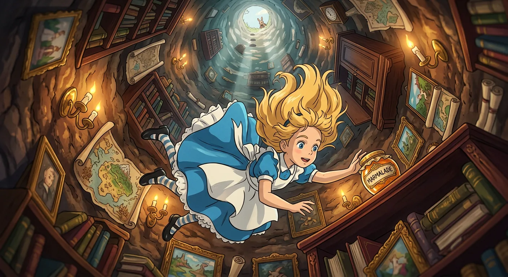
Curiosity Plunges Into the Unknown
Alice sat by the river feeling very bored on a hot summer day. Her sister was reading a book with no pictures, and Alice thought that was no fun at all. She was almost too sleepy to make a daisy-chain when something wonderful happened. A White Rabbit with pink eyes ran right past her, talking to itself about being late! The Rabbit was wearing a little coat and even had a tiny watch. Alice thought this was so amazing that she jumped up and chased after it. She followed the Rabbit right down into its hole without even thinking twice.
Alice fell down, down, down for a very long time. The hole had shelves with books and jars and pictures on the walls. She had time to think about her cat Dinah and wonder silly things. Then she landed softly on a pile of leaves. She found a hall full of locked doors and a beautiful little key. Through a tiny door, she saw the prettiest garden with flowers and fountains. But she was too big to fit through! She found a bottle that said "DRINK ME" and it made her shrink down small. Then she found a cake that said "EAT ME" and wondered what would happen next.
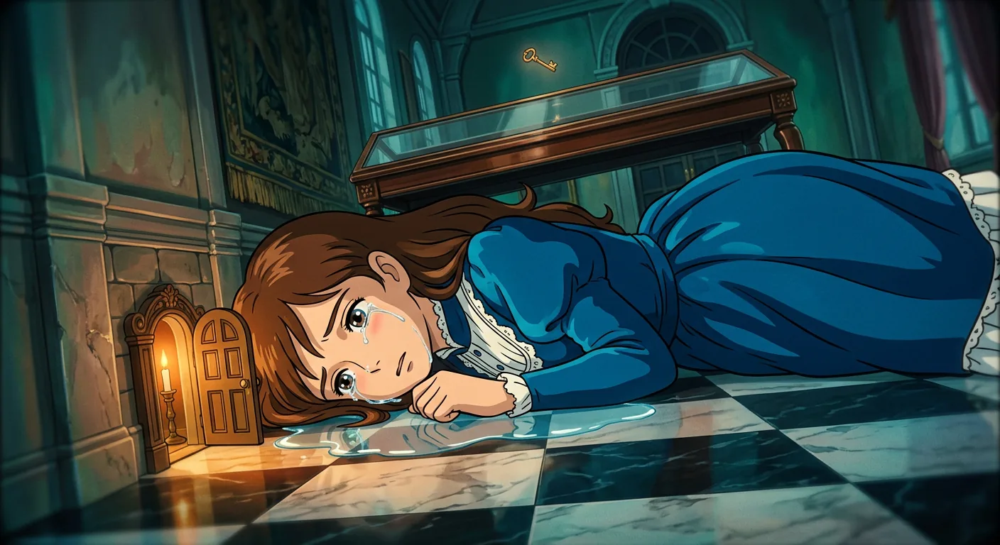
Growing and Shrinking Through Salty Tears
Alice was having the silliest day! She started growing taller and taller, like a telescope stretching up to the sky. She grew so tall that her feet seemed very far away. She even imagined sending her feet little boots as presents! When she was nine feet tall, she grabbed a tiny golden key. But now she was much too big to fit through the little door to the beautiful garden. This made Alice so sad that she cried and cried. Her tears made a big puddle on the floor.
Then the White Rabbit hurried by, looking very worried and carrying a fan and gloves. When Alice tried to talk to him, he got scared and ran away, leaving his things behind. Alice picked up the fan and started fanning herself. Something magical happened—she began shrinking! She got smaller and smaller until she slipped right into her own puddle of tears. She swam and swam until she met a Mouse paddling nearby. Alice tried to be friendly, but she kept talking about cats, which made the Mouse upset. Soon more animals joined them in the water—a Duck, a Dodo, and many others. They all swam together toward the shore to see what would happen next.
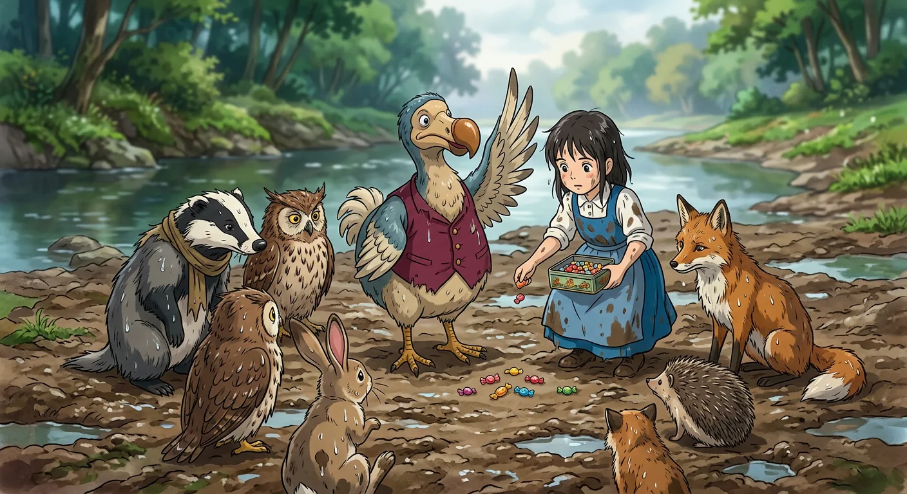
Everybody Wins and All Get Prizes
All the animals sat together on the bank, dripping wet and cold. Their feathers drooped and their fur stuck flat. Everyone wanted to get dry again! The Mouse tried reading a boring history lesson, thinking that would help. But it did not work at all.
Then the Dodo had a wonderful idea called a Caucus-race. Everyone ran around in a big messy circle. They started and stopped whenever they wanted. When it was over, the Dodo said everybody had won! Alice gave out little candies from her pocket as prizes. She even got a prize too, her own thimble given right back to her. It was all very silly, but the animals looked so serious that Alice did not laugh.
Later, Alice talked about her cat Dinah back home. But this made the birds nervous, and they all flew away. Poor Alice felt lonely and began to cry softly. Then she heard little footsteps coming closer, and she looked up hopefully.
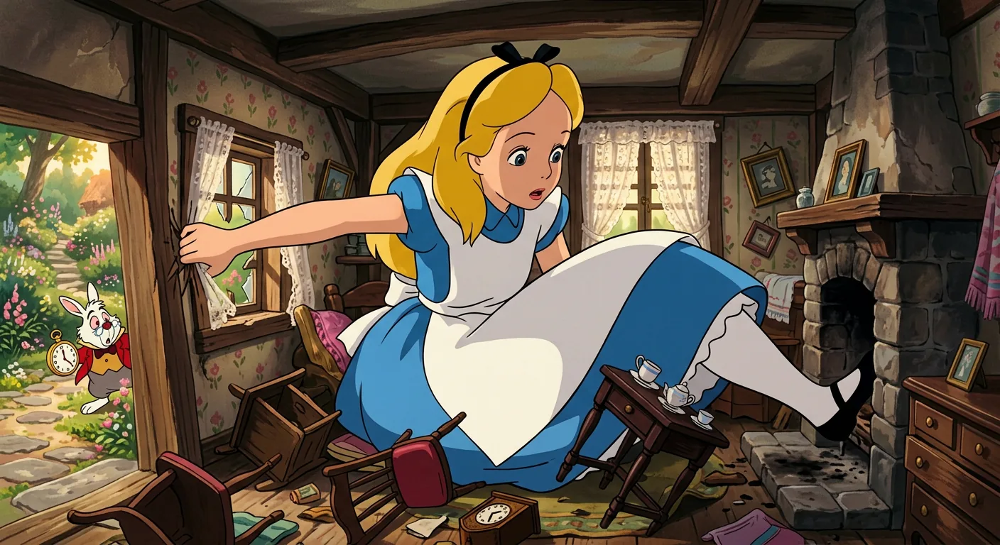
Too Large for the Rabbit's House
Alice was still in that strange, wonderful place when the White Rabbit came hurrying by. He was very worried about his missing fan and gloves. The Rabbit thought Alice was his helper, Mary Ann! He sent her to his little house to fetch his things. Alice thought it was so funny to run errands for a rabbit.
Inside the Rabbit's cozy room, Alice found the fan and gloves. But she also saw a little bottle. She took a sip, hoping it would help her grow. It worked much too well! She grew and grew until she filled the whole tiny house. Her arm stuck out the window and her foot went up the chimney. Poor Alice felt very stuck and uncomfortable.
The Rabbit and his friends tried to get Alice out. Finally, Alice found some little cakes and ate one. She shrank down small again and ran away into the woods. There she rested by a buttercup and spotted something curious nearby. A big blue caterpillar sat very still on top of a tall mushroom.
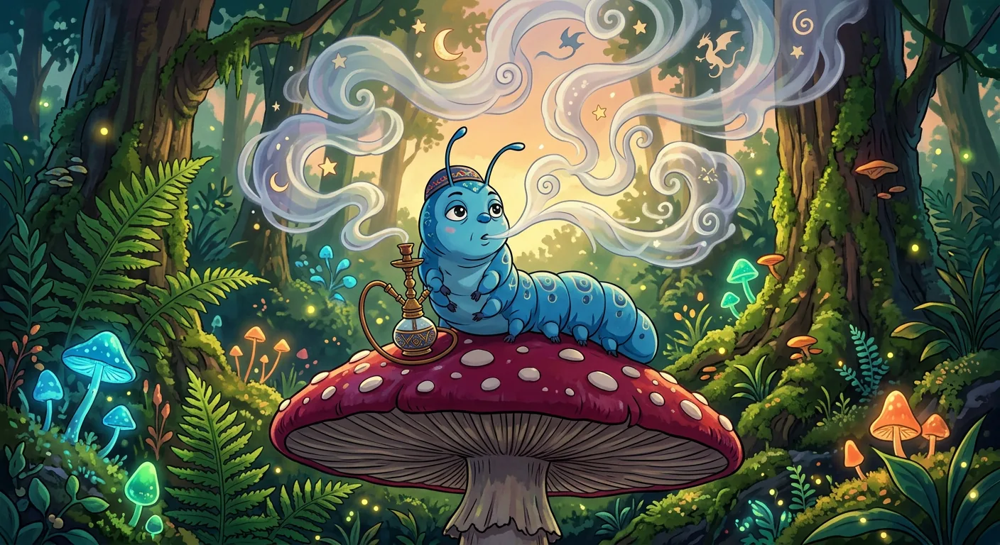
Questions of Size and Self
Alice met a Caterpillar sitting on a mushroom. The Caterpillar asked her a simple question. It said, "Who are you?" But Alice did not know how to answer! She had been so many sizes that day. She felt all mixed up inside. The Caterpillar was not very helpful at all. It just kept asking the same question over and over.
Then Alice tried to say a poem she knew. But the words came out silly and wrong! The poem was about a funny old man. He stood on his head and did somersaults. He even balanced wiggly eels on his nose! The Caterpillar said the poem was all wrong. Alice had to agree it was very different now.
Before crawling away, the Caterpillar told Alice something useful. One side of the mushroom would make her grow. The other side would make her shrink. Alice nibbled carefully at both pieces. After some tries, she got back to her right size. She felt so glad! Now she could keep looking for that beautiful garden.
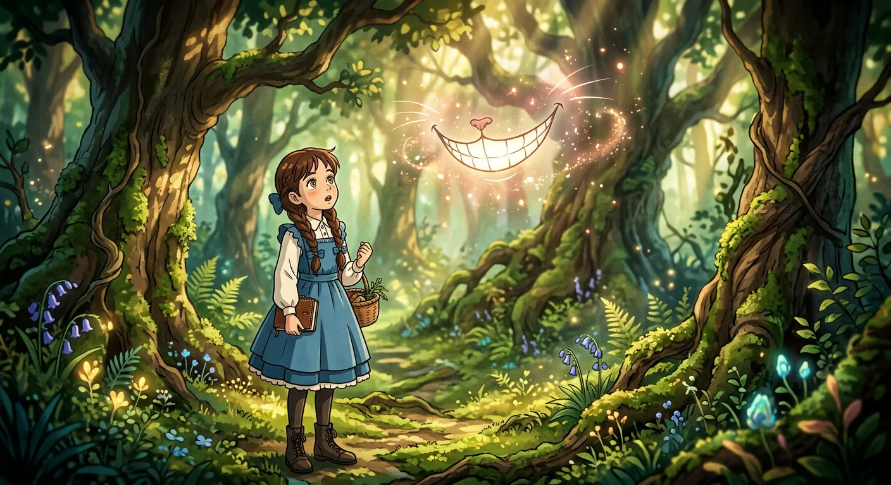
Chaos, Cheshire Grins, and Flying Crockery
Alice stood looking at a funny house in the woods. A footman came running up who looked just like a fish! He knocked on the door and a frog-faced footman answered. The Fish-Footman gave him a big letter saying the Queen wanted the Duchess to play croquet. When they both bowed, their curly hair got tangled together, and Alice laughed so hard she had to hide!
Inside the house, everything was wild and silly. There was smoke and pepper everywhere, and dishes were flying through the air! The Duchess gave Alice a baby to hold, then rushed off to see the Queen. But as Alice carried the baby outside, something magical happened. Its nose grew longer and pointier until it turned into a little pig! Alice set it down and watched it trot happily into the woods.
Then Alice met the wonderful Cheshire Cat, sitting in a tree with the biggest smile. The Cat told her everyone here was mad, even himself! He could disappear bit by bit, leaving only his grin floating in the air. Alice thought that was the most curious thing she had ever seen!
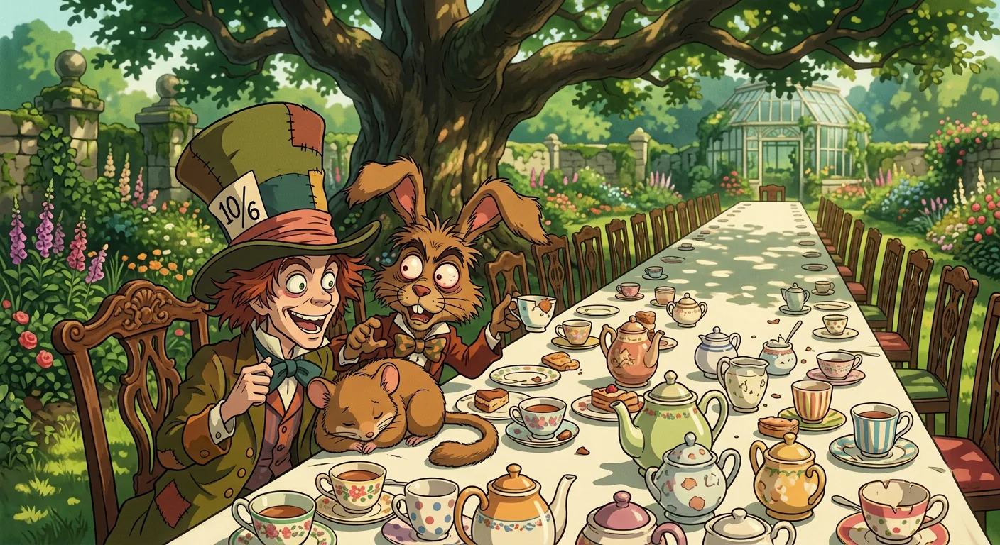
Riddles, Rudeness, and Endless Tea
Alice found a big tea table under a tree. The March Hare and the Hatter sat at one end. A sleepy Dormouse sat between them, dozing away. "No room!" they shouted, but there was lots of room! Alice sat down anyway.
This was the silliest tea party ever. The Hatter asked a funny riddle about a raven and a writing desk. Alice tried hard to think of the answer. But guess what? The Hatter did not know the answer either! It was just a nonsense riddle. The Hatter had a strange watch that told the day but not the time. It was always six o'clock at this party, so it was always teatime. The sleepy Dormouse told a dreamy story about three sisters who lived in a treacle well. But everyone kept interrupting poor Alice when she asked questions.
Finally Alice had enough of their silliness. She walked away into the woods. Then she found a little door in a tree. She stepped through and found herself back in the hall with the tiny golden key. This time she nibbled some mushroom and became just the right size. At last she could go into the beautiful garden!
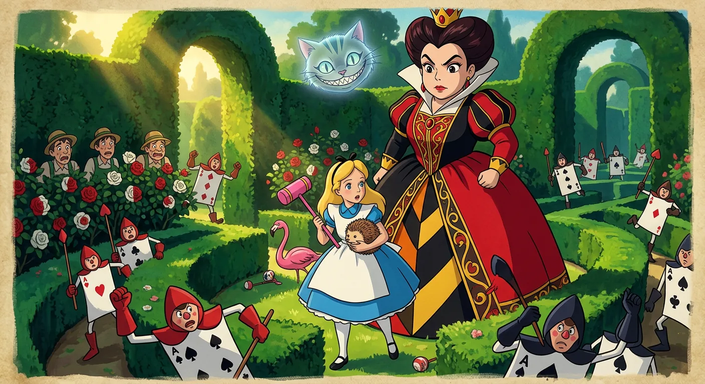
Painted Roses and Royal Fury
Alice walked into a garden and saw something very strange. Three gardeners who looked like playing cards were painting white roses red! They whispered to Alice that they had planted the wrong roses. The Queen would be so angry if she found out.
Suddenly everyone shouted "The Queen!" and the gardeners hid their faces. A grand parade came marching by with soldiers, fancy people, and children all shaped like playing cards. At the very end came the King and Queen of Hearts. The Queen was loud and bossy and got angry about everything. Alice was brave and stood up tall. She even helped the poor gardeners hide in a big flower pot so they would be safe.
Then Alice played the silliest croquet game ever. The balls were curly hedgehogs that walked away. The mallets were wiggly flamingoes that kept looking around. Nobody followed any rules and everyone played at the same time. The Cheshire Cat appeared with just his floating head and smiled at all the silliness. What a topsy-turvy day in Wonderland!
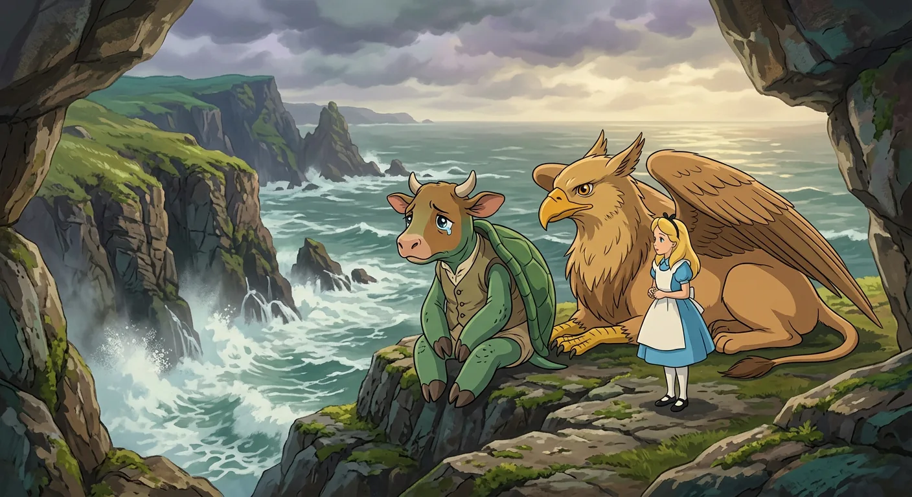
Morals, Mustard, and the Mock Turtle
Alice walked arm in arm with the Duchess, who was being very friendly now. Alice thought maybe pepper had made the Duchess grumpy before. She made up a fun rule in her head about how different foods change how people feel. Pepper makes you hot-tempered, vinegar makes you sour, and sweet candy makes children sweet! The Duchess kept finding lessons in everything they talked about, even mustard and flamingos. Alice tried to help, but the Duchess just got more and more confusing. Then the Queen appeared looking very cross, and the Duchess hurried away fast.
The Queen asked if Alice had met the Mock Turtle yet. Alice had never heard of him! The Queen took Alice to meet a Gryphon sleeping in the sunshine. The Gryphon brought Alice to the Mock Turtle, who sat sighing sadly on a rock. He told Alice all about his school under the sea, where he learned funny subjects like Reeling and Writhing and Mystery instead of reading and writing and history. His lessons got shorter every day until there was a holiday!
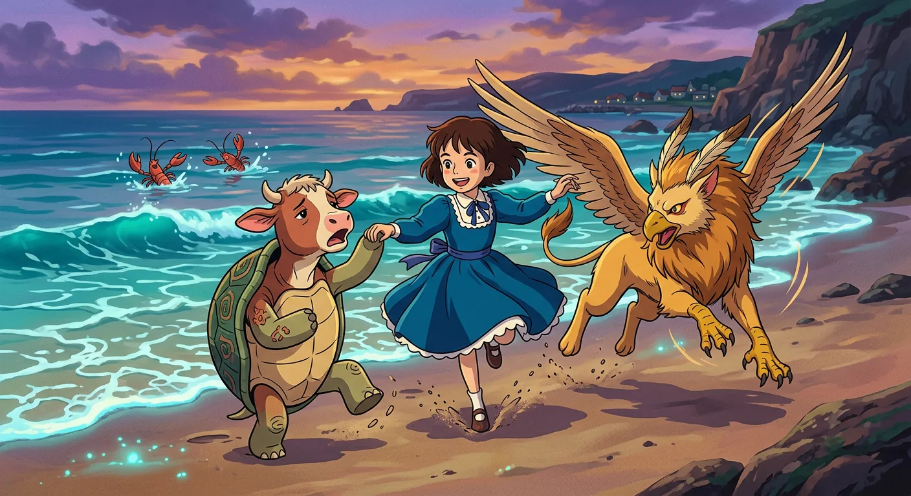
Dancing with Lobsters by the Sea
The Mock Turtle was feeling very sad and wiped his eyes. The Gryphon helped him feel better by patting his back. Then the Mock Turtle asked Alice a funny question. Had she ever met a lobster? Alice said no, and so they told her about a special dance called the Lobster Quadrille.
The two friends tried to explain this silly sea dance. There were seals and turtles and salmon all in lines. Everyone had a lobster partner! They would toss the lobsters into the waves and swim after them. It sounded very mixed up and wonderful. Then they danced around Alice and sang a song. The song asked a snail to come and dance. It went "will you, won't you, will you, won't you" over and over again. Next they made jokes about fish and shoes that made Alice giggle. The Mock Turtle started singing about beautiful soup, but suddenly someone shouted that a trial was starting! The Gryphon grabbed Alice's hand and off they ran together.
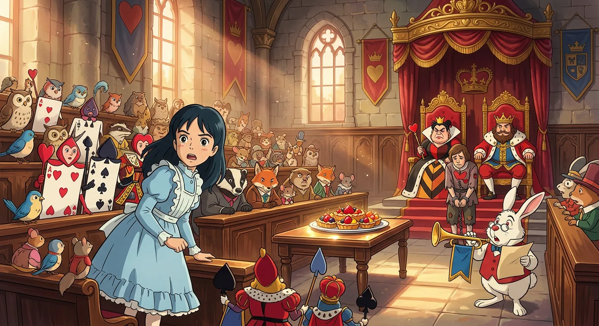
A Courtroom of Nonsense and Tarts
The King and Queen of Hearts sat on their thrones looking very important. They were having a trial! All sorts of little birds and animals were there, mixed in with playing cards. The Knave of Hearts stood before them looking very sad. On a table in the middle of the room sat a big dish of tarts, and they looked so yummy that Alice felt hungry just looking at them!
Alice had never been to a real court before, but she knew what everything was from her books. There was a jury box filled with twelve funny creatures all writing on slates. They were writing down their own names so they would not forget them! Alice thought this was very silly. The White Rabbit read out that the Knave had stolen the Queen's tarts. Then the Mad Hatter came to tell what he knew, but he just talked about tea and got very confused. Alice started to feel strange because she was growing bigger again! Finally the White Rabbit called out the next name, and Alice got a big surprise. The name he called was hers!
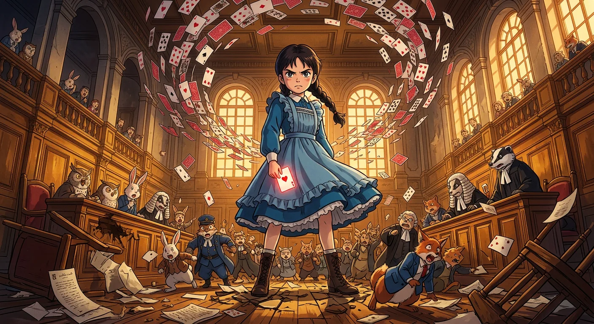
Alice Defies the Court's Absurd Justice
Alice jumped up so fast that she knocked over the jury box. All twelve jurymen tumbled down like goldfish spilling from a bowl. She quickly picked them up and put them back, even though one little lizard ended up upside down and looked very sad until she turned him right way up.
The King said Alice must tell what she knew about the case. She said she knew nothing at all. Then he made up a silly rule that anyone too tall must leave. Alice pointed out this made no sense, and the King turned very pale. The Queen got upset and wanted to punish Alice before the trial was even finished. Alice had grown so big now that she wasn't scared anymore. She stood up tall and said, "You're nothing but a pack of cards!" Suddenly all the cards flew up in the air around her. Then Alice woke up on the riverbank with her head in her sister's lap. It had all been a wonderful dream. She told her sister everything and ran off happily to have tea.
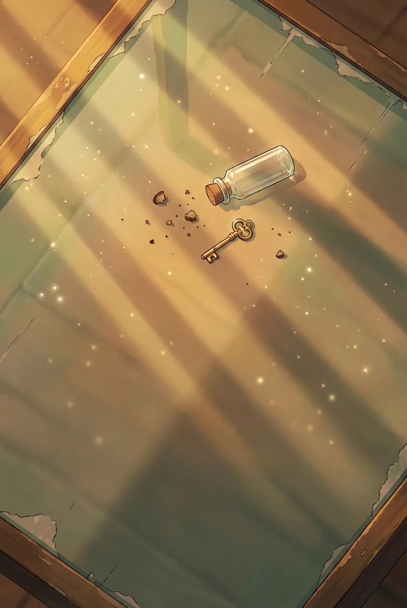